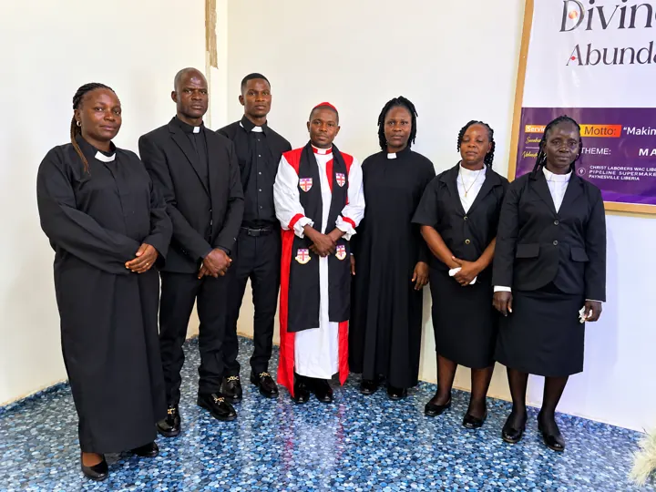
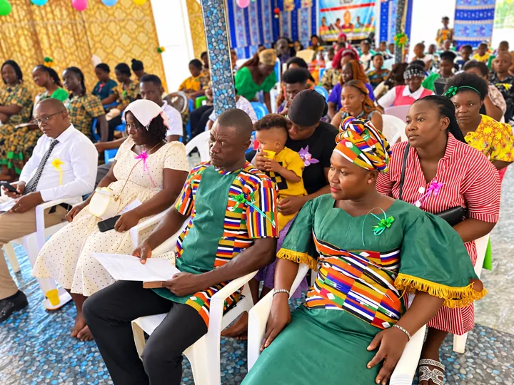
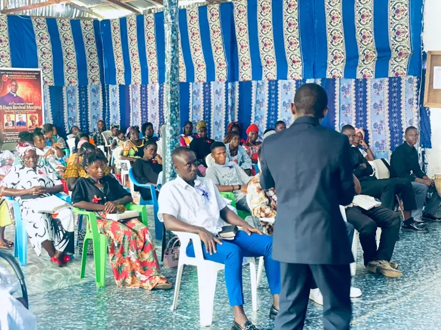
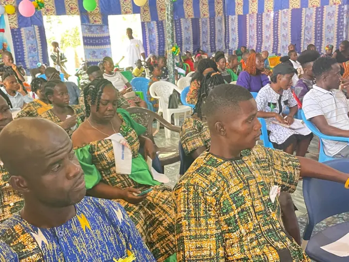
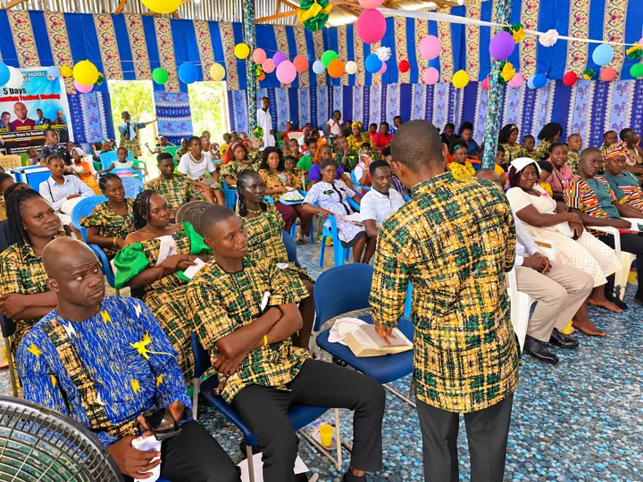

Pastoral Board
Pastoral leadership, spiritual care, preaching, teaching, counseling, sacramental and ministry coordination, and congregational oversight.
Offices, Ministries & Departments
Christ Laborers Church recognizes that every member has a role in the Body of Christ. There are 25 ministries and departments where you can serve.

5 ministries
Shepherding the flock and raising up servant leaders.
Pastoral leadership, spiritual care, preaching, teaching, counseling, sacramental and ministry coordination, and congregational oversight.
Supports pastoral leadership through service, congregational care, administration, visitation, benevolence, communion assistance and practical ministry.
Promotes continuing education, ministerial accountability, fellowship and professional development for:
Develops small groups where members study Scripture, pray, fellowship, receive pastoral care and grow as disciples.
Supports research, leadership development, training, conferences, publications and institutional learning with Great Commission Christian University, American International University of Science and Theology, the Worldwide Anglican University and others.
4 ministries
Leading God's people into His presence and welcoming every guest.
Leads the congregation in worship.
Mobilizes believers for:
Welcomes and assists worshippers, maintains order, supports hospitality and helps create a safe, welcoming worship environment.
Welcomes guests, visiting ministers, partners, dignitaries and members, and supports major church programs and events.

6 ministries
Building strong men, women, marriages, children and young people.
Empowers women spiritually, socially, professionally and economically, encouraging prayer, discipleship, family development, leadership and community service.
Builds responsible Christian men through discipleship, fellowship, family leadership, mentoring, entrepreneurship, prayer and community service.
Supports marriages and families through:
Fellowship, discipleship, career development, relationship education, leadership training and spiritual support for young adults.
Equips young people to grow in Christ, education, leadership, entrepreneurship, character, career development and responsible citizenship.
Age-appropriate Christian education, discipleship, worship, mentoring, protection and activities for children.

4 ministries
Taking the Gospel beyond the walls of the church.
Mobilizes the Church for Gospel outreach, evangelistic campaigns, crusades, community witnessing and discipleship.
Coordinates local, national, regional and international missionary activity, church planting, outreach, humanitarian missions and missionary support.
Identifies communities for Gospel outreach and supports the establishment and growth of healthy local congregations.
Responsible for:

3 ministries
Showing the love of Christ in practical ways.
Compassionate support for members and communities facing hardship, emergencies, bereavement, poverty or other significant needs.
Christian compassion, advocacy, spiritual support and practical assistance to vulnerable children, widows and families in need.
Promotes health awareness, community health education, medical outreach and collaboration with qualified health professionals.

3 ministries
Faithful management, economic empowerment and Christian education.
Promotes responsible stewardship, budgeting, accountability, fundraising, financial education and transparent management of church resources.
Encourages entrepreneurship, financial literacy, ethical business, investment education, job creation and economic empowerment.
Coordinates Bible studies, Sunday School, theological education, discipleship materials, teacher development and Christian learning.
Every net needs many hands. Talk with us and we will help you discover your gifts and find your place.